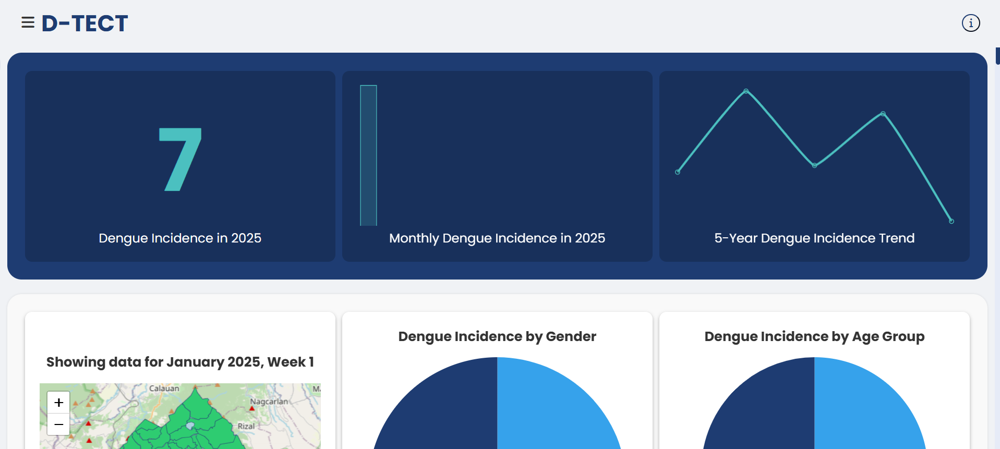

D-TECT System
D-TECT is our undergraduate thesis project, a machine learning system designed to predict dengue risk severity in San Pablo City. Our group analyzed a dataset of over 243,265 records to identify outbreak trends. My part was training and comparing various models including LSTM, XGBoost, GBM, Random Forest, Decision Tree, and SVM to ensure the highest prediction accuracy. I was also in charge of creating the system flowcharts and drafting the majority of the project documentation.
Python & ML
Supabase
Seaborn & Matplotlib